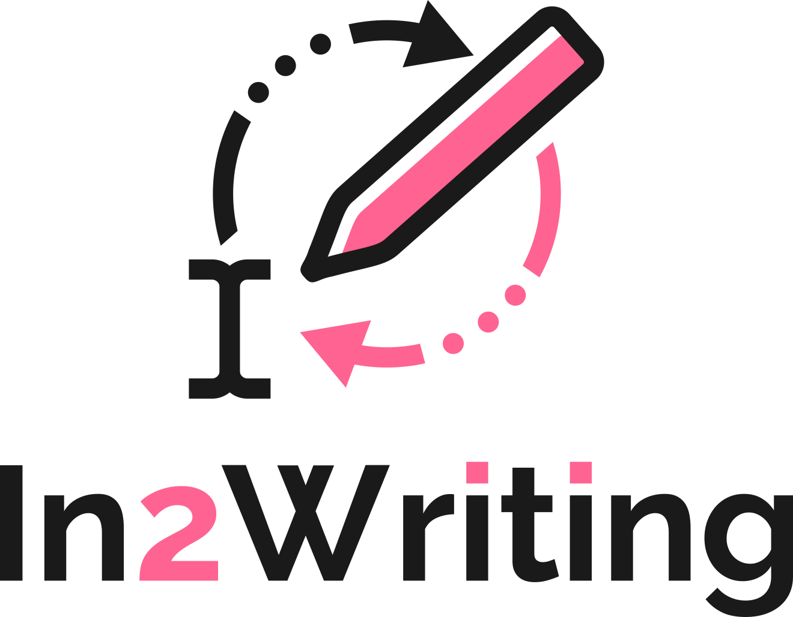
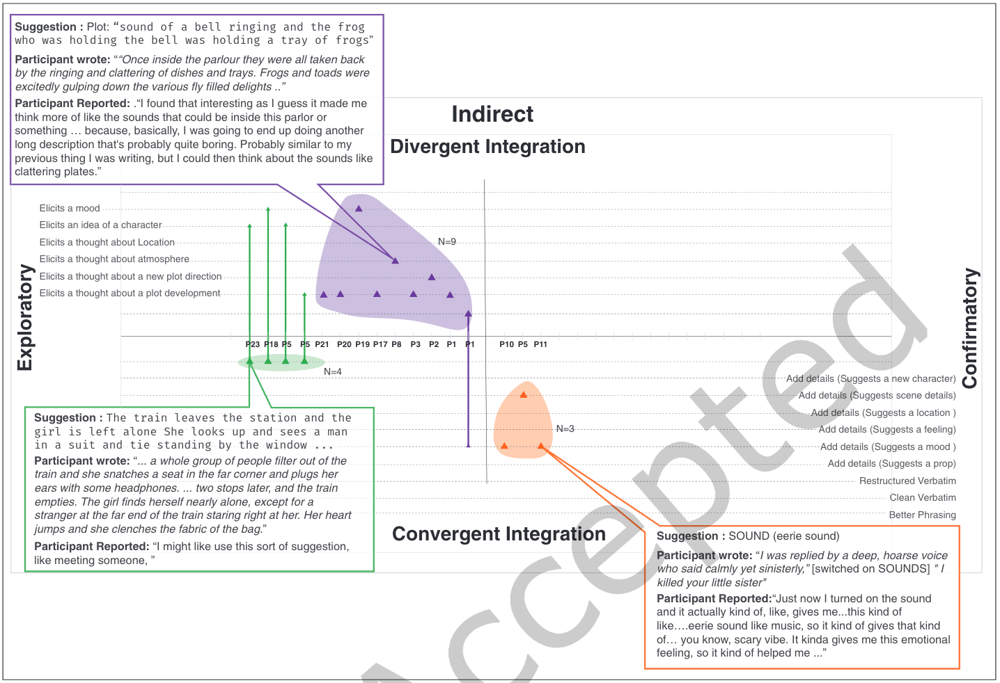
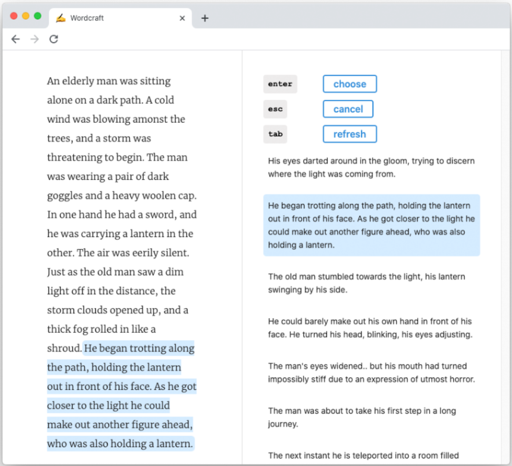
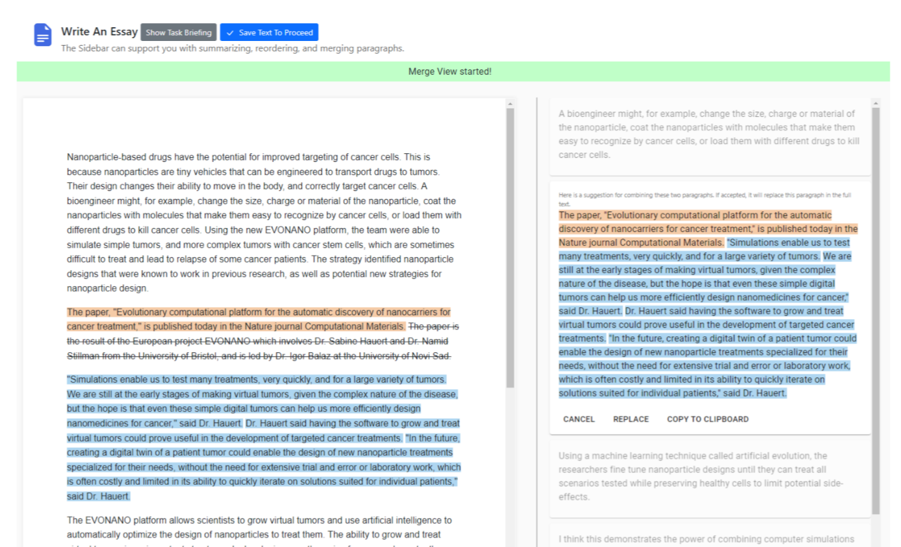

The Third Workshop on Intelligent and Interactive Writing Assistants
The ACM CHI Conference on Human Factors in Computing Systems (CHI 2024)
~*~ Accepted Papers ~*~
The purpose of this interdisciplinary workshop is to facilitate discussion around writing assistants, thereby enhancing our understanding of their usage in writing process and predicting the consequences. To this end, we strive to bring together researchers from the human-computer interaction (HCI) and natural language processing (NLP) communities by alternating our workshop venue between HCI and NLP every year.
Dark Sides: Envisioning, Understanding, and Preventing Harmful Effects of Writing Assistants
This year, the workshop will explore the challenges and dark sides of intelligent writing assistants, as well as how to prevent them. The workshop will consist of two parts: first, participants will explore a design space of writing assistants and identify design patterns. In the second part, participants will use speculative design to explore the dark sides or challenges in selected design patterns.
This year the workshop will be held on Saturday, 11th May at CHI 2024 in Honolulu, Hawaii, USA.
The workshop will be hybrid, including both in-person and synchronous virtual participation.
⬇️ Examples of new forms of human-machine collaborative writing. ⬇️

Integrative Leaps
(Singh et al., ToCHI 2022)

Wordcraft
(Yuan et al., IUI 2022)

Beyond Text Generation
(Dang et al., UIST 2022)

Dramaton
(Mirowski et al., arxiv 2022)
Important Dates
- Paper submission deadline: 13 February, 2024 11:59PM AoE (no extensions!)
- Paper acceptance notification: 7 March, 2024
- Workshop date: 11 May, 2024
Call for Participation
CFP: 3rd Workshop on Intelligent and Interactive Writing Assistants (In2Writing, @CHI’24)
Writing assistants have become increasingly ubiquitous, and these tools will impact how we write. In our workshop, we, as a diverse group of researchers and practitioners interested in writing assistants, will discuss the "dark sides" of writing assistants - their potential harmful effects - to envision research agendas to understand and prevent them. We invite submissions from the HCI and NLP communities as well as industry practitioners, professional writers, and other communities interested in the future of intelligent writing assistants.
We ask potential participants to submit a short paper: participants will be invited based on demonstrating in-depth thinking about some aspects of writing assistants. Although non-archival, invited participants can have their papers hosted on the workshop website. Each paper could have one or more co-authors, i.e. multiple participants can attend by submitting a paper together. Note that to attend the workshop, a paper submission is required. A subset of talks during the workshop may be publicly livestreamed, however participation in interactive activities requires registration.
Papers must choose one of the following categories and specify the type in the submission:
- Extended abstracts: Submissions describing preliminary but interesting ideas or results.
- New work proposals: Ideas and plans for future research that have not yet been started.
- Position papers: Perspectives, theories, and provocations on writing assistants.
- Past work reflections: Reflections on your work that has been accepted for publication in another venue in the past 1 year (e.g., a summary of an accepted work), or synthesis of multiple previous publications done either by you or others (e.g., a brief literature synthesis).
We welcome all submissions that are highly relevant to writing assistants. Potential topics include the challenges and “dark sides” relevant to:
- Building and designing writing support tools
- Evaluation and comparison of writing assistants and design features
- Bias in writing assistance
- Ethical concerns and limitations
- Legal issues with copyright and the psychological sense of ownership
- Systems for underrepresented languages, types of writers, and writing tasks
- Accessibility and inclusivity
- Bridging the gap between NLP techniques and useful writing assistance
- Impacts, applications, and user adaptations of large language models (LLMs) to people’s writing practice
If you have any questions or concerns, please feel free to contact the organizers at in2writing.workshop@gmail.com.
Submit
Submit your short paper on OpenReview by 13 February, 2024 11:59PM AoE (no extensions!)
We ask authors to follow the CHI Publication Format (either Latex or Word templates). 1- or 2- column formats are both acceptable. The submission can be up to 1,500 words, excluding references and an appendix. The appendix can be up to four pages, but please do not expect reviewers to read it.
Submissions must be anonymized for review.
Tentative Schedule
Timezone: Hawaii Standard Time (Hawaii, USA) -
GMT-10
| Time | Event |
|---|---|
| 9:00-9:20AM | Welcome and ice breaker activity |
| 9:20-10:50 | Lightning talks |
| 10:50-11:00 | Coffe break |
| 11:00-12:00PM | Panel |
| 12:00-1:30 | Lunch break |
| 1:30-2:30 | Identify and Share Design Patterns |
| 2:30-2:45 | Coffee break |
| 2:45-03:45 | Speculative Design Activity |
| 3:45-4:00 | Coffee break |
| 4:45-5:00 | Wrap up: discussion and future work |
Sponsors
Panelists
- John Gallagher
- Timo Hannay
- Umair Kazi
- Christopher Young
Organizers
You can contact the organizers by emailing in2writing.workshop@gmail.com.